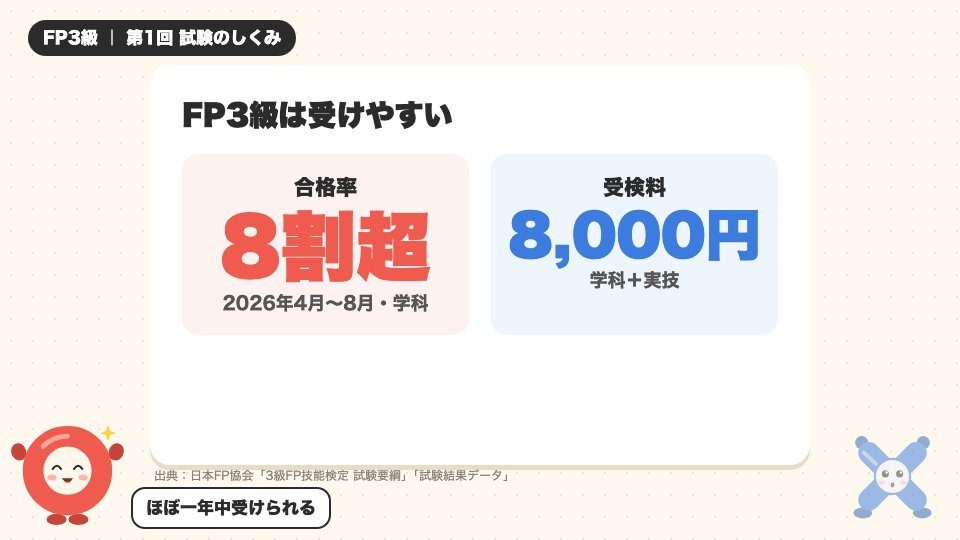
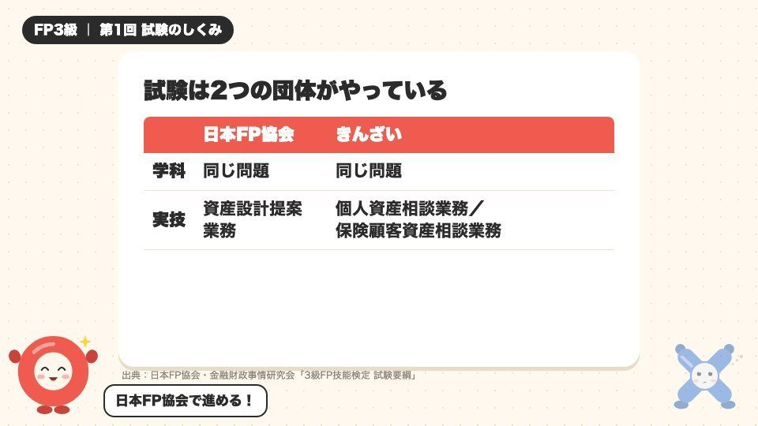
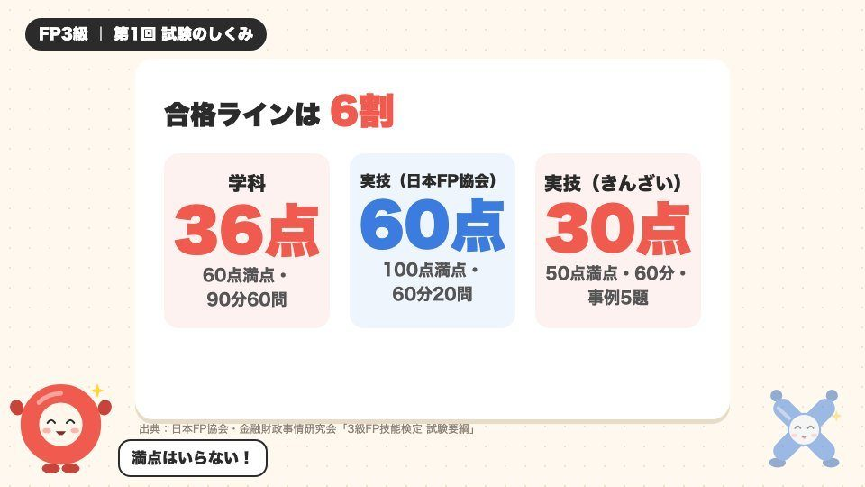
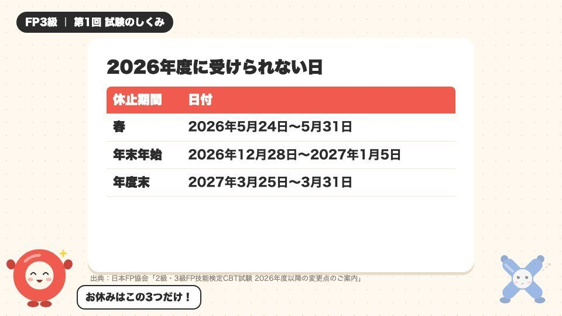
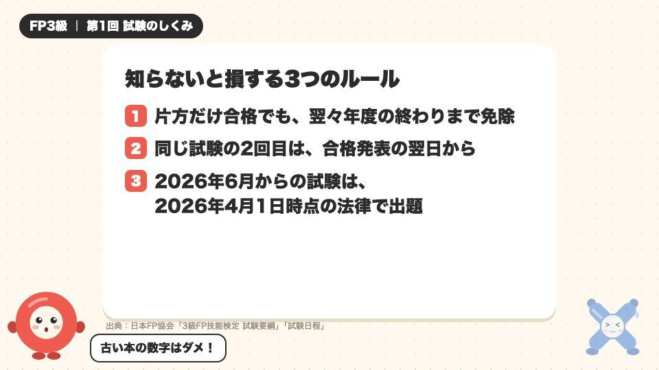
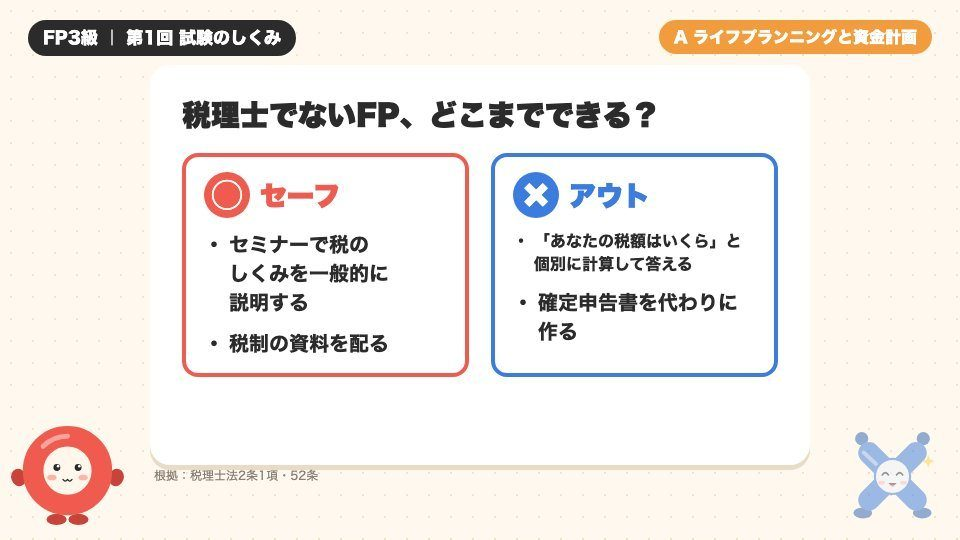

FP3級は、学科と実技の2つの試験に合格すると取れる資格です。合格ラインはどちらも6割。受検料は学科と実技あわせて8,000円（非課税）です。テストセンターのパソコンで受ける方式で、休止期間を除けば、ほぼ一年中受けられます。日本FP協会の2026年4月〜8月の試験では、学科で86.23%、実技で83.29%の人が合格しました。この記事の数字は、2026年11月17日時点で確認したものです。
▶ この記事の内容を動画で見る（マルバツ資格塾）01FP3級とは。国家検定で、両方合格で「3級FP技能士」

FPは、ファイナンシャル・プランナーの略です。家計や将来のお金について、計画を一緒に立てる仕事を指します。
FP3級（3級FP技能検定）は、国が定めた技能検定のひとつで、国家検定です。学科試験と実技試験の両方に合格すると、「3級FP技能士」になります。
受検資格は、「FP業務に従事している者または従事しようとしている者」です。これからFPの知識を仕事や生活に使いたい人も、ここに入ります。
02試験は2つの団体が実施。違うのは実技だけ

FP3級は、日本FP協会と、金融財政事情研究会（通称きんざい）の2つの団体が実施しています。学科試験は、どちらで受けても同じ問題です。違うのは実技試験の科目です。
| 日本FP協会 | きんざい | |
|---|---|---|
| 学科 | 同じ問題 | 同じ問題 |
| 実技 | 資産設計提案業務 | 個人資産相談業務／保険顧客資産相談業務 |
日本FP協会の「資産設計提案業務」は、学科で学ぶ6つの分野ぜんぶの知識を使います。学科の勉強が、そのまま実技に生きる科目です。
03試験の中身と合格ライン。満点はいらない

試験時間・問題数・合格ラインは次のとおりです。
| 試験 | 時間 | 問題 | 合格ライン |
|---|---|---|---|
| 学科（2団体共通） | 90分 | 60問・多肢選択式 | 36点以上（60点満点） |
| 実技（日本FP協会） | 60分 | 20問・多肢選択式 | 60点以上（100点満点） |
| 実技（きんざい） | 60分 | 事例5題 | 30点以上（50点満点） |
どの試験も、合格ラインは6割です。満点をねらう必要はありません。6割を確実に取ることが、FP3級の基本の考え方になります。
学科で学ぶのは、次の6つの分野です。
- ライフプランニングと資金計画（年金、健康保険、教育費、住宅ローン）
- リスク管理（生命保険、損害保険）
- 金融資産運用（預金、株、投資信託、債券）
- タックスプランニング（所得税、確定申告）
- 不動産（家を買う・貸す・売るときのルールと税金）
- 相続・事業承継（贈与、相続、相続税）
どれも、生活の中で出会うお金の知識です。
日本FP協会の2026年4月〜8月の試験結果は次のとおりです。
| 試験 | 受検者 | 合格者 | 合格率 |
|---|---|---|---|
| 学科 | 41,352人 | 35,658人 | 86.23% |
| 実技（資産設計提案業務） | 41,495人 | 34,563人 | 83.29% |
04受け方・費用・日程

試験は、2024年度から学科・実技ともCBT方式に完全移行しています。CBTとは、テストセンターのパソコンで問題を解く方式のことです。会場は全国どこでも選べて、日時は空いている枠から選びます。
| 項目 | 内容 |
|---|---|
| 受検料（非課税・日本FP協会） | 学科＋実技 8,000円／学科のみ 4,000円／実技のみ 4,000円 |
| 予約できる期間 | 受検日の属する月を含む4カ月前の月初から、受検日の3日前まで |
| 合格発表 | 受検日の翌月中旬 |
2026年4月1日以降の申し込みでは、受検日時や会場を変更できる期間が、初回の申込日から最長120日になっています。
2026年度に試験が休みになるのは、次の3つの期間です。
| 休止期間 | 日付 |
|---|---|
| 春 | 2026年5月24日〜5月31日 |
| 年末年始 | 2026年12月28日〜2027年1月5日 |
| 年度末 | 2027年3月25日〜3月31日 |
05知らないと損する3つのルール

1. 片方だけの合格も、ムダにならない。学科だけ、実技だけに合格した場合（一部合格）、合格した試験は、試験実施日の翌々年度末まで免除できます。期限のうちに、残りの試験に合格すればよいしくみです。
2. 落ちても、すぐには受け直せない。同じ科目の2回目以降の受検日は、受検済みの試験の合格発表日の翌日以後に限られます。合格発表は受検日の翌月中旬なので、次の受検まで間があきます。
3. 教材の年度に注意する。試験は、「法令基準日」の時点で施行されている法令をもとに作られます。2026年6月以降の試験は、法令基準日が2026年4月1日です（2026年5月までの試験は2025年4月1日）。税金や年金の数字は毎年のように変わります。古い年度の本の数字を覚えないようにしてください。
06例題：税理士でないFPは、どこまで話してよいか

FP3級では、ほかの資格の法律との線引きがよく問われます。○×問題を1問見てみます。
例問題：税理士の資格を持たないFPが、公民館のセミナーで、所得税の計算の流れを一般的に説明した。これは税理士法に違反する。○か×か。
正解は×です。
税理士法が禁じているのは、税理士でない人が税理士業務を行うことです（第52条）。そのひとつの「税務相談」は、ある人の申告について、税金の計算の相談に応じることを指します（第2条第1項第3号）。セミナーで一般的な計算の流れを説明することは、これに当たりません。
| 税理士でないFPができること | できないこと |
|---|---|
| セミナーで税のしくみを一般的に説明する | 「あなたの税額はいくら」と個別に計算して答える |
| 税制の資料を配る | 確定申告書を代わりに作る |
一般的な説明はできる、その人の税額の計算はできない、と覚えておくと整理しやすくなります。
07まとめ
- FP3級は国家検定。学科と実技の両方に合格すると「3級FP技能士」
- 合格ラインはどの試験も6割。学科は60点満点で36点以上
- 受検料は学科＋実技で8,000円（非課税）。片方だけなら4,000円
- CBT方式で、休止期間を除き、全国のテストセンターでほぼ一年中受けられる
- 一部合格は翌々年度末まで免除。再受検は合格発表日の翌日以後。教材は法令基準日に合った年度のものを使う